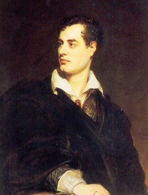

George Gordon Byron (1788-1824)
George Gordon Byron suốt đời tin rằng chết đi, ông phải xuống địa ngục, nhưng hậu thế đã ghi tên ông trong lịch sử văn học của Anh và lịch sử chiến đấu của Hi Lạp, mà sự nghiệp rực rỡ đó, ông để lại cho hậu thế hồi mới ba mươi sáu tuổi.
Theo quan điểm của các nhà đạo đức thì ông đáng xuống địa ngục thật. Ông cơ hồ như bất chấp luân lý, coi thường dư luận; sống cực kỳ bê bối theo sở của mình, mắc một tội ghê tởm, tội loạn luân, mà cứ đàng hoàng thú tội chứ không thèm giấu giếm. Nhưng ai biết rõ ông thì đều nhận rằng tâm hồn ông đẹp, cái tật lãng mạn của ông là tật chung của thời đại, còn cái tội lớn kia thì cũng có chỗ ta hiểu được ông, và dù sao, sự hi sinh của ông cho Hi Lạp cũng đủ chuộc hết lỗi cho ông rồi.
°
° °
Ông sinh ở cuối thế kỉ XVIII, bên Anh, vào thời đại lãng mạn nhất, trong một xứ mà phong trào lãng mạn phát sinh sớm nhất ở châu Âu. Vì phong trào này nảy nở ở Anh, Đức cùng một lúc rồi mới truyền qua các nước khác như Pháp, Ý… Ở Anh, có tập thơ Ossian (xuất bản năm 1761), ở Đức có tập truyện tình Wether của Goethe, xuất bản năm 1774. Hai tác phẩm chính đó ảnh hưởng rất lớn tới văn chương và đời sống châu Âu, đầu thế kỷ XIX.
Đời sống đó còn phóng túng gấp mấy đời sống của hạng văn nhân thi sĩ theo Lão, Trang như Nguyễn Tịch, Lưu Linh… ở đời Lục Triều bên Trung Hoa nữa. Hạng quí phái đua nhau hưởng lạc, và như Stendhal đã nói, lúc nào cũng tìm những cảm xúc mạnh, mỗi ngày một mạnh, vì cảm xúc cũng như rượu, lâu rồi quen đi. Ở thế kỉ XVIII, những chất ma tuý chưa được thịnh hành, người ta nuôi cảm xúc bằng rượu, đổ bác và ái tình. Say sưa thành một cái “mốt”, đến nỗi có kẻ đã bảo rằng: “Ai nghiên cứu lịch sử Anh ở thế kỉ XVIII, đều phải ngạc nhiên rằng rượu đã chiếm một vị trí lớn ghê gớm trong đời sống thanh niên”. Người ta bảo ông này là hạng “bốn chai bố”, ông kia là hạng “năm chai bố”, và những ông vào hạng “sáu chai bố” (nghĩa là có thể nốc được sáu chai rượu trong một bữa tiệc) được thiên hạ ngưỡng mộ là “bậc hão hán”. Đổ bác cũng được trọng như vậy. Trẻ mới mười lăm tuổi mà nhiều nhà quí phái cho nó hàng ngàn đồng để “nó tập sự trong ngành đổ bác một cách đàng hoàng”. Có những thanh niên “nướng” bảy ngàn bảng Anh trong một canh bạc ở Luân Đôn, rồi thản nhiên ra về. Và tất nhiên, ái tình là môn người ta “tập sự” càng sớm càng hay. Sinh viên nào ở
Đó là phong tục bên Anh thời Byron là như vậy, tôi phải nhấn mạnh điểm đó để độc giả khỏi bất công với Byron. Tôi nói phong tục bên Anh, là phong tục trong giới thượng lưu thôi – tất nhiên – vì hạng dân quê nghèo đói, làm quần quật quanh năm không đủ nuôi gia đình thì có bao giờ dám nghĩ tới sự hưởng lạc một cách quí phái như vậy.
°
° °
Byron thuộc về một dòng quí phái rất cổ ở Newstead. Tổ tiên theo nghề võ, có đời dự cuộc viễn chinh của Thập tự quân. Ông nội làm chức Thuỷ sư Đô đốc; thân phụ, John Byron, học võ bị tại một trường bên Pháp, hồi còn nhỏ, đã qua chiến đấu bên Mỹ, rồi hai chục tuổi trở về Luân Đôn, cưới một thiếu phụ đã ly dị chồng, đẹp và giàu (lợi tức bốn ngàn Anh bảng mỗi năm), tức bà Nam tước Conyers. Bà Conyers sanh được một con gái là Augusta Byron rồi mất năm 1784.
Ông John Byron thành hoá vợ, phung phí quá, túng thiếu, tục huyền với cô Catherine Gordon de Gight, xấu nhưng quí phái và giàu. Hai vợ chồng phá tán hết gia sản rồi qua bên Pháp ở, để tránh tiếng trách móc của gia đình, đến khi bà có mang mới trở về Luân Đôn. Ngày 22-1-1788, bà sanh được một đứa con trai, tức George Gordon Byron. Khi Geoge ra đời thì Augusta Byron, người chị cùng cha khác mẹ với George, đã về ở với bên ngoại.
Thân mẫu Byron thấy tình cảnh sa sút, không dám ở lại Luân Đôn nữa, ôm con về ở gần cha mẹ cho bớt tốn kém. Tính bà cần kiệm, có thể sống thanh bạch được. Nhưng ông chồng thì phóng đãng, mà bà lại không dám từ chối ông một điều gì cả. Ông vay tiền để cờ bạc, rượu chè, trai gái rồi bắt bà trả; ông bỏ nhà đi hằng tuần, hàng tháng, hễ ló mặt về tới nhà là nã tiền vợ. Bao nhiêu ruộng đất, bà phải bán hết để cung phụng cho ông, và mới hai mươi ba tuổi bà rùng mình nghĩ tới tương lai: không biết làm sao nuôi nổi con đây.
Cậu Byron rất đẹp trai, thông minh, âu yếm, nhưng tính cách cũng như cha, hung dữ lạ thường mỗi khi có điều gì bất mãn. Mới bốn tuổi, có lần bị người vú rầy là vô ý tứ, làm dơ một chiếc áo mới, cậu xoé toạt chiếc áo từ trên xuống dưới rồi liệng xuống đất, lẳng lặng nhìn chị vú, vẻ khiêu khích. Câu lại có một tật nữa: tật thọt chân. Bà chua xót vô cùng, sinh ra quạu quọ, keo cú.
Hưởng những di truyền của cha như vậy, sống trong một gia đình như vậy, cha mẹ hễ gặp nhau là gây lộn, làm sao Byron phát triển bình thường cho được.
Mùa hè năm 1791, bà nhận được nhiều bức thư liên tiếp của ông, giọng thê thảm: “Anh không còn một chiếc áo sơ mi nữa… Anh không còn một xu dính túi nữa... Quần áo rách hết cả rồi… Không biết ngày mai lấy gì mà ăn”. Rồi ít bữa sau hay tin ông mất. Có người bảo ông đã tự tử.
Cái tang đó thực ra làm nhẹ được gánh của bà, nhưng bà rất đau khổ vì vẫn thương ông, vẫn nhớ cặp mắt như nhung của ông. Thế là mới ba tuổi, Byron đã mồ côi cha, sống với mẹ tính tình bất thường, lúc thì ôm cậu hôn lấy hôn để, lúc thì đánh đập tới tấp. Cả hai mẹ con đều đau khổ, nhưng đều yêu nhau.
°
° °
Nhờ đức cần kiệm của bà, cảnh nhà không đến nỗi túng thiếu lắm. Năm tuổi cậu học vỡ lòng về sử và tiếng La Tinh.
Khi đã bắt đầu biết suy nghĩ, cậu tìm hiểu cuộc cách mạng 1789 của Pháp, đọc rất nhiều sách về sử La Mã, Hi Lạp, Thổ Nhĩ Kỳ, và mơ mộng sau thành một danh tướng.
Rồi một hôm vào năm 1794, bà hay tin người em chồng chết, tuyệt tự, và tất cả gia tài bên chồng sẽ về Byron hết.
Cậu được mẹ dắt về quê cha ở Newstead trong một thời gian. Lần đầu tiên thấy những lâu đài cổ kính cất trên bờ hồ, trong một khu vườn thông mênh mông, rồi nghĩ rằng tất cả cơ đồ đó sẽ thuộc về tay mình, Byron có cảm giác là đương sống một cái mộng rất đẹp chỉ có trong truyện Ngàn lẻ một đêm của Ả Rập.
Từ đó đời sống của cậu dễ chịu hơn. Cậu rất siêng học, đã mười tuổi đã đòi thầy dạy thêm.
Năm 1801, dọn lên Luân Đôn, cậu vào học một trường lớn, trường
Trong mấy năm sau, vụ hè nào cũng về Newstead chơi, làm quen với cô Mary Chaworth, cũng trong một gia đình quí phái như cậu. Hai họ Chaworth và Byron có một mối thù với nhau: một ông bác hay ông chú của Mary bị một ông bác hay ông chú của Byron giết trong một cuộc đấu gươm. Nhưng vốn lãng mạn, Byron thấy mối thù đó chỉ làm cho tình yêu Mary của chàng thêm vẻ nên thơ vì chua xót; chàng tưởng tượng chàng và Mary như cặp Roméo và Juliette trong bi kịch của Shakespeare, và chàng đắm đuối mê nàng, mặc dù nàng lớn hơn chàng hai tuổi.
Gia đình nàng không hất hủi, và chính nàng thì cho rằng có một thanh niên tập sự làm cavalier servant ở bên cũng là một tiêu khiển thú vị, nên hai trẻ thường dạo mát trong rừng, ngắm cảnh trời tà trên dòng suối; có đêm về tối quá, chàng lấy cớ là sợ ma, xin ở lại nhà nàng; một lần nàng lại làm duyên làm dáng tặng chàng một tấm hình và một chiếc nhẫn nữa. Tội nghiệp, chàng sướng muốn hoá điên, đêm đêm thao thức chỉ mong sau mau sáng để phi ngựa lại lâu đài Chaworth, đứng trong sân mà rình lúc nàng hiện trên sân thượng, mái tóc phất phơ trong ánh nắng rực rỡ của bình minh. Trên đời, chàng không còn biết có ai khác, gọi nàng là “sao mai”, không muốn rời nàng lấy một bước.
Rồi một tối, vô tình nghe được câu này nàng nói với chị vú: “Bộ chị tưởng tôi mê anh chàng tàn tật, thọt chân đó ư?”. Chàng điếng người đi, thấy đất sụp ở dưới chân, một lúc sau mới tỉnh lại, chạy một mạch về nhà, trong cảnh đêm tối, vừa thất vọng, vừa giận thân, chỉ muốn tự tử. Nhưng sáng hôm sau, chàng cũng không thể không lại thăm nàng được, nuốt hết tủi nhục, không hé răng một lời với nàng. Chỉ trông thấy mặt nàng là bao nhiêu nỗi đau khổ tiêu tan hết. Vụ hè đó chàng ở lại Newstead thêm ba tháng nữa, mãi tới khi chắc chắn rằng Mary đã hứa hôn với một người rồi, chàng mới lặng lẽ ra đi. Đó là mối tình đầu tiên của Byron. Trước kia chàng cho ái tình là thần tiên, bây giờ chàng chua chát thấy rằng nó tầm thường quá.
Thất tình thì người ta làm thơ; và Byron về Luân Đôn tuy nói là để học, mà thực là để làm thơ.
°
° °
Đương lúc chán nãn, thì chàng gặp một người để kể lễ tâm sự, nàng
Năm đó chàng mới 16 tuổi, và
Vì chưa tới tuổi trưởng thành, chàng chưa được sử dụng gia tài, nên lúc nào cũng túng tiền, vay của bạn bè rồi bắt mẹ trả. Vay của bạn bè cũng không đủ, chàng phải hỏi những người cho vay nặng lãi, và chàng xin Augusta bảo đảm cho mình: “Xin chị đừng nghi ngờ gì em cả, em sẽ giữ lời hứa, nếu em còn sống tới tuổi trưởng thành thì em sẽ hoàn lại chị; nếu em chết trước tuổi đó thì gia tài về chị chớ về ai. Chị không thiệt gì hết”.
Được em gái một người bạn, cô Elisabeth Pigot, khuyến khích, chàng hăng hái làm thơ, thức suốt đêm để viết và năm 1807, xuất bản tập thơ đầu tiên: Hours of idleness (Những lúc nhàn), gởi bán ở các tiệm sách Luân Đôn. Một tiệm bán được bảy cuốn. Chủ tiệm bảo: “Bảy cuốn là cừ rồi đấy”. Tập thơ bán được hết và hơi có tiếng vang. Thi hào Wordsworth khen chàng là “nếu tiếp tục thì sẽ nỗi danh”. Byron hăng hái tiếp tục. Chàng đậu được bằng cấp của trường
Được chính thức nhận vào làng thi sĩ, chàng càng sống bốc đồng hơn trước. Chàng họp một nhóm bạn nhậu, tối ngày say sưa, chuyền tay nhau uống rượu trong một cái sọ người mà chàng cho nạm bạc và khắc những hàng thơ này:
Ta đã sống, đã yêu, đã đùa cợt như em;
Ta đã chết: đất để lại xương của ta;
Bạn trẻ, bạn cứ rót đầy đi – không hề gì cho ta đâu;
Để môi của bạn kề vào còn hơn là để cho sâu nó đục xương ta.
Và những buổi chiều ta, chàng thường lại bãi tha ma ngồi bên những nấm mồ mà mơ mộng.
Năm 1908, chàng xoay được một số tiền, cùng với một người bạn thân tên là Hobhouse du lịch lục địa châu Âu. Trước khi xuống tàu, chàng làm một bài thơ gởi cho Mary:
Thế là xong – và, và run rẩy trong cơn dông,
Chiếc thuyền giương buồm trắng;
Gió mát ban đêm vi vu,
Trên ngọn cột buồm nghiêng nghiêng,
Và tôi phải từ giả xứ này,
Vì tôi chỉ yêu có mỗi mỗi thiếu nữ.
Mối tình đầu hồi 15, 16 tuổi quả là khó quên được.
°
° °
Hai người lại Lisbonne, Séville, Cadix, Gibraltar, rồi qua Ý, Albanie, sau cùng Hi Lạp. Hobhouse có mục đích khảo cổ, Byron thì tìm hứng để làm thơ.
Tới Hi Lạp, lòng chàng tưng bừng như được về thăm quê hương thứ nhì của chàng. Từ hồi nhỏ, nhờ đọc các thi sĩ và sử gia, chàng đã yêu xứ đó. Trời xanh, biển cũng xanh, không khí nhẹ nhàng và rực rỡ, biết bao di tích làm cho lòng chàng rung động một niềm hoài cổ. Nhưng thấy cảnh tủi nhục, nghèo khổ của dân Athène dưới sự đàn áp của người Thổ, lòng chàng phẫn uất, và trong bản thảo tập thơ Childe Harold[1] mà chàng bắt đầu viết từ khi du lịch ở Ý, chàng hô hào dân Hi Lạp nổi dậy, chống bọn xâm lăng:
Xứ Hi Lạp đẹp đẽ kia, xưa vinh quang như vậy, mà nay chỉ còn những di tích thê thảm.
Xứ Hi Lạp tuy đã chết rồi mà vẫn bất tử kia; tuy đã ngã gục mà vẫn còn vĩ đại,
Ai sẽ cầm đầu những người dân phiêu tán,
Mà giải thoát cho Hi Lạp khỏi cảnh nô lệ chịu đã quá lâu?[2]
Một hôm ông gặp một thanh niên Hi Lạp, chàng hỏi tại sao nhẫn nhục chịu ách của Thổ được. Thanh niên đó nhúng vai đáp: “Biết làm sao được bây giờ!”. Chàng bất bình, mắng: “Tinh thần nô lệ! Không đáng mang tên là người Hi Lạp! Phải nổi dậy chứ chịu bó tay à!”.
Chàng ở lại Athène khá lâu, tới tháng bảy năm 1811 mới trở về Anh. Cuộc viễn du đó càng làm cho chàng thêm chán đời: đâu đâu chàng cũng thấy đời sống cực khổ, cũng đủ những tật xấu; mà Thượng đế tạo ra trái đất này không có mục đích gì cả, cái gì cũng chỉ có một thời, thịnh đó rồi suy đó như làn sóng dâng lên rồi hạ xuống. Cái gì cũng chẳng có giá trị gì cả, rốt cuộc đời sống chỉ nên hưởng lạc. Tâm sự của Byron khi tàu cập bến Luân Đôn cũng tựa như tâm sự của Lý Bạch trong câu này:
Xử thế nhược đại mộng,
Hồ vi lao kỳ sinh?
°
° °
Về nhà ít bữa thì có tang mẹ. Bà Byron, trong một cơn giận, đứt mạch máu và chết thình lình. Lúc đưa ma, chàng không theo linh cửu, đứng ở cửa ngó xe tang đi khuất, rồi đeo găng tay đánh quyền, chàng kêu một người đầu tớ khoẻ lại để đấu quyền với chàng. Chàng mắm môi, không thốt một tiếng, đấm túi bụi, như điên như cuồng, mạnh một cách lạ lùng, nhờ vậy nỗi khổ mới vơi bớt được một phần.
Nhìn chung quanh chàng thấy hoàn toàn cô độc, cha mẹ điều mất, chị đã về nhà chồng, còn người yêu, cô Mary… chàng không dám nghĩ tới nữa, nốc rượu cho quên, quên hết.
Chàng đâm ra trâng tráo, tuyên bố với mọi người rằng đời chán lắm, có cưới vợ thì chỉ nên đào mỏ, còn đàn bà thì “ả nào như ả nấy, càng già càng tốt, vì càng già càng mau chết cho chàng được rãnh nợ…”. Và mới bắt đầu được hưởng gia tài, chàng đã nghĩ đến việc lập di chúc, để lại sản nghiệp cho bà con, bạn bè. Chàng mỉa mai, oán hận Thượng đế, bảo nếu kiếp sau Thượng đế có bắt chàng phải làm người thì chỉ cần “được một cặp giò lành mạnh thôi, để khỏi bị thiên hạ chen lấn trước cửa Thiên đàng”. Chính thái độ đó làm cho nhiều người không chịu được Byron.
Năm 1812, chàng xuất bản hai khúc đầu của tập thơ Childe Harold, một tập gần như tự truyện. Chỉ hôm trước hôm sau chàng bỗng thấy mình nổi danh. Tập thơ có giọng sướt mướt than thân trách phận và nhiều đoạn trắng trợn tả đời sống lãng mạn, truỵ lạc của chàng. Tất cả xã hội phụ nữ quí phái ở Luân Đôn say mê đọc, ước ao được gặp chàng. Người ta không để ý đến cái chân thọt của chàng nữa, chỉ khen chàng đẹp trai, cặp mắt như nhung, tài hoa mà sang trọng, giàu có mà lại chưa vợ. Thế là đương cô độc, Byron bỗng có ba bốn ngàn trái tim bạn “trong cái giới xa hoa, rực rỡ nhất Luân Đôn, cái giới lấy đêm làm ngày, ca hát, truyện trò, tán gẫu, ăn nhậu trong khi mọi người khác đang ngủ”. Trước nhà chàng xe pháo đậu cả hàng dài, hàng trăm người danh giá đưa danh thiếp xin được gặp mặt ngay. Nhiếp chính vương cũng lại thăm chàng và nói chuyện rất lâu về tập thơ. Là vì người ta đã chán ngấy cái lối sống cũ, những tục lệ cũ rồi, và Byron đã có cam đảm vạch một lối sống mới, bất chấp dư luận, lại có can đảm sống lối sống đó, cho nên mọi người thán phục.
Bất kỳ trong một cuộc hội họp nào người ta cũng chỉ nhắc tới Byron. Bao nhiêu quốc gia đại sự thành ra phụ thuộc hết. Đàn ông thì ghen với chàng, mà đàn bà thì ghen với nhau. Trên bàn nào cũng có tập Childe Harold. Trong bữa tiệc nào người ta cũng cố mời Byron cho kỳ được và người ta tìm mọi cách để ngồi gần Byron. Tới nỗi một em gái mới mười mấy tuổi, cải trang làm con trai để vào làm thị đồng (page) cho Byron. Trong mấy tháng liền chàng sống giữa “biển rực rỡ những kim cương và tơ lụa”. Chưa có thanh niên nào được nàng thơ cưng tới mực đó. Y như trong truyện Ngàn lẽ một đêm vậy.
Tất nhiên có vô số tiểu thư yêu chàng, và tất nhiên chàng biết đáp lại mối tình đó. Nhưng chàng để ý nhất tới cô Milbanke, một thiếu nữ mồ côi, quí phái, giàu có, mà tính tình trái hẳn với chàng. Chàng lãng mạn bao nhiêu thì cô nghiêm trang bấy nhiêu, chàng chỉ yêu thơ, cô chỉ thích triết học và khoa học, học rộng và thông minh. Điều đó tuy lạ mà cũng dễ hiểu: trong cái xã hội phù phiếm đó, một người nghiêm trang tất nhiên nổi bật lên, cũng như trong một đám ăn bận loè loẹt thì cô nào y phục giản dị nhất được để ý tới nhất.
Chàng hỏi cưới cô, cô từ chối, làm cho chàng vừa ngạc nhiên, vừa chán đời. Lần này là lần thứ hai mà chàng Don Juan bị hất hủi. Lòng tự ái của chàng càng bị thương tổn thì chàng càng sinh ra khinh đời, ngạo vật.
Đúng lúc đó,
Byron chẳng giấu kín chuyện đó, mà còn chép lại trong tập thơ Fiancée d’Abydos[3]. Chỉ trong bốn đêm chàng viết một hơi được một ngàn hai trăm câu thơ tả một mối tình loạn luân giữa hai anh em ruột Selim và Zuleika. Rồi không hiểu vì lẽ gì, chàng lại tuyên bố nỗi lòng của Selim trong truyện chính là nỗi lòng của mình.
Đầu năm sau, họ lại rủ nhau về Newstead sống chung non một tháng nữa. Lúc đó Byron đã gần như điên, lúc nào cũng để súng lắp đạn sẵn ở bên cạnh, hễ không ngủ được thì uống nước suối hết chai này đến chai khác. Có đêm chàng uống hết mười hai chai, đập cổ chai rồi nốc, chứ không kịp mở nút nữa.
Trong khoảng thời gian này, Byron xuất bản tập thơ Le Corsaire[4], tả một tên cướp là Conrad, hung tợn và chán đời, chống lại xã hội, không phục tùng ai và ghét hết cả mọi người. Tác phẩm bị chỉ trích dữ dội, nhưng được rất được nhiều người hoan nghênh, chỉ trong mấy ngày bán 13.000 bản. Trong thi sử nhân loại chưa hề có điều lạ lùng đó.
°
° °
Cô Milbanke sau khi từ chối lời cầu hôn của Byron có vẻ hối hận và thầm mong chàng lại cầu hôn một lần nữa. Phụ nữ có một số người như cô: họ đọc sách nhiều, lý luận giỏi, muốn hành động theo lý trí, nhưng rốt cuộc chỉ là hành động theo cảm xúc nhất thời, nên nhiều khi tự mâu thuẫn với mình và tự dấn thân vào những cảnh éo le.
Annabella (tức Milbanke) tìm cách thư từ với Byron, ca tụng thơ chàng, khuyên chàng đọc sách triết lý và tôn giáo, có cái ý muốn cải hoá chàng. Cải hoá Byron, một người tin chắc rằng mình sống để chỉ đợi lúc xuống Địa ngục!
Lòng tự ái của Byron trước bị thương tổn, bây giờ được vuốt ve. Chàng lại hỏi cưới một lần nữa và lần này thì Annabella nhận lời. Nhưng đến ngày cưới chàng đâm hoảng: ý trung nhân của chàng thông minh quá, có giọng dạy đời quá, có vẻ một bà giáo hiền từ chứ không có chút bóng dáng của một nàng thơ. Nàng muốn cho chàng thành một Socrate, nên gần nàng chàng thấy ngượng nghịu. Cặp mắt nàng xoi mói, như nhìn thấu tâm can chàng, chàng đâm bực mình. Như vậy thì làm sao sống chung với nhau được? Chàng nói bóng nói gió cho nàng tự ý lùi bước. Nhưng nàng say mê chàng quá rồi, đáp: “Không, em không lùi bước… Sẽ tràn trề hạnh phúc anh ơi. Càng ngày em càng thấy khát khao được gần anh hơn lên”. Thôi trời bắt thì đành chịu. Có đau khổ thì sau này đừng trách nhau nhé! Và đầu năm 1815 họ làm lễ cưới. Khi sắp hạ bút ký tờ hôn thú, chàng ngửng lên hỏi viên công chức ở đô sảnh: “Ông, tỉ số những cặp lại đây xin cưới nhau rồi sau trở lại đây xin ly dị nhau là bao nhiêu hở ông?”. Một cuộc hôn nhân như vậy không thể lâu bền được. Trong tuần trăng mật họ sung sướng thật; nhưng trong cái vui vẫn có chút hằn học. Annabella vẫn tin có thể cải hoá được ông chồng, và cho rằng chỉ bước đầu là khó khăn, hễ biết kiên nhẫn thì việc gì cũng thành. Nhưng chàng chống lại kịch liệt, không muốn nghe vợ thuyết giáo, giảng luân lý lại còn khiêu khích: “Ừ, cứ rán đi, xem có thuyết phục nổi anh không?”.
Rồi chàng nhớ
Từ biệt nàng
Sáng sớm hôm đó, xe đã đậu ở cửa. Nàng bồng con lại phòng ngủ của chàng để từ biệt. Cửa còn đóng. Nàng đau xót ngồi bệt xuống cửa để đợi, nhưng nghĩ lại, nàng lại thôi, thẳng bước lên đường.
Tới trạm thứ nhất, nàng viết cho chàng mấy hàng này: “Anh Byron thân mến của em, con ngoan lắm, đi đường không mệt. Em mong rằng anh nhớ những lời cầu nguyện và những lời khuyên của bác sĩ. Đừng làm thơ nữa, mà cũng bớt rượu đi, đừng làm cái gì không hợp pháp và hợp lý…”.
Tôi nghiệp! Hai câu đầu cảm động biết bao, nàng vẫn yêu chồng tha thiết, nhưng luôn luôn cái lý trí đã hại nàng. Byron chắc đã nhăn mặt khi đọc tới câu sau, nhất là nàng lại gạch dưới bốn chữ hợp pháp và hợp lý. Nàng ám chỉ mối tình giữa
Hai tháng sau, Byron xin ly thân. Annabella đau khổ nhưng đành phải nhận. Thu xếp việc nhà xong, Byron qua Genève chơi với một thiếu nữ: Claire Clairmont.
°
° °
Byron có lần nói: Tôi không phải là một ông thánh như Joseph, nhưng tôi có thể chắc rằng trong đời tôi, tôi không hề dụ dỗ phụ nữ nào. Lời đó đúng, ít nhất là trong sự đi lại với Claire Clairmont. Chính cô ả đã táo bạo lạ thường, “câu” chàng rồi rủ chàng qua Thuỵ Sĩ ở chung với Shelley, một thi sĩ lãng mạn cũng nỗi danh ngang với Byron. Và hình như ả đã thất tình Shelley nên mới có thái độ đó, để trả thù Shelley.
Mới gặp nhau Byron và Shelley đã quí nhau liền: tính tình họ giống nhau, đều bất chấp dư luận, mà cũng biết trọng tài nhau. Tại Genève, Byron viết nốt khúc thứ ba của tập thơ Childe Harold và nhiều bài để tặng
Khi Shelley và Clair Clairmont trở về Anh, Byron ở lại, đi chơi núi Alpes, viết bi kịch Menfred, một kịch nổi danh mà nhân vật chính phảng phất như Faust của Goethe, rồi qua Genève ở. Mối tình chàng với Claire Clairmont dứt hẳn. Chàng có một đứa con riêng với ả, đặt tên là Biron nhưng nó chết từ hồi nhỏ.
Vẫn không có tin tức gì của
Chàng cô độc ở Venise, Byron lại càng truỵ lạc, sống chung với một mụ chủ quán, Sageti. Không khí ở Venise rất thích hợp với những cuộc tình duyên lãng mạn: cảnh trăng, cảnh nước, tiếng hát của bọn chèo đò, và những tửu quán cất ngay bên bờ nước, quyến rũ biết bao; Byron tha hồ hưởng lạc, không sợ ai chê cười – vì ở xứ lạ, ai biết chàng đâu – mà cũng không sợ thiếu nợ vì đời sống ở đây rất rẻ. Chàng viết thêm bi kịch Cain mà nội dung hiện rõ trong nhan đề, và tập thơ Don Juan mà các nhà phê bình cho là tác phẩm tiêu biểu của chàng: lời không chuốt, nhưng nhẹ nhàng, châm biếm, gần Candite của Voltaire hơn là gần Faust của Goethe, mặc dầu lãng mạn, đa cảm hơn Candite.
Chàng thu xếp bán gia sản ở bên nội ở Newstead được 90.000 Anh bảng (khoảng vài triệu đồng quan mới ngày nay) và bỗng thành một đại phú gia bên Ý. Hồi đó chàng mới khoảng ba chục tuổi mà tóc đã có nhiều sợi bạc, nước da vàng tái, má xệ xuống.
Một hôm nguời ta giới thiệu với chàng nữ bá tước Teresa Guiccioli, một thiếu phu rất đẹp mới 16, 17 tuổi mà phải làm bạn với một ông già lục tuần. Hai người mến nhau liền và chàng đóng vai cavalier servant, đúng với mốt đương thời.
Ông bá tước hay ghen và rất có quyền thế; mà chàng chỉ là một kiều dân, không có bạn bè luật pháp gì che chở cho cả. Teresa ho ra máu, suốt ngày nằm ở giường, và chàng suốt ngày cũng ngồi ở chân giường để săn sóc. Gia nhân xôn xao, thì thầm, ông chồng già thì vẫn nhã nhặn. Nhưng chàng biết chắc rằng vở kịch có thể trở thành bi kịch được. Mặc, chết thì chết. Chàng được hầu hạ người đẹp thì sướng rồi. Một người đẹp mà ủ rũ, không tin rằng còn hưởng đời được lâu thì vẻ đẹp tăng lên bội phần, như một cành hoa lê dưới giọt mưa xuân vậy; mà mối tình càng chua xót, cay đắng thì càng thêm cuồng nhiệt. Chàng thường tự nhủ: Mối tình này là mối tình cuối cùng của ta, vì chàng không tin rằng minh còn sống bao lâu nữa. Trai tài gái sắc yêu nhau, không cưới được nhau mà cùng nghĩ rằng sắp phải từ bỏ một cuộc đời: thật là đủ tình tiết cho một thiên lệ sử của một thời lãng mạn.
Có lẽ họ muốn kéo dài cái vui hưởng trái cấm đó, chứ không muốn sống chung với nhau, sợ vỡ mộng. Nàng thì cho rằng có ngoại tình là một điều thanh cao, đẹp đẽ, còn ly dị với chồng là một tội nặng với Thượng đế. Nàng thì cho rằng hầu hạ một thiếu phụ là bổn phận phong nhã, mà cướp vợ của lão già kia thì không phải là quân tử! Cho nên họ cứ tiếp tục cuộc đời kỳ dị đó.
Nếu họ chỉ lãng mạn như vậy thôi thì cũng không sao, nhưng họ lại có những tư tưởng tự do, cách mạng. Lúc đó (năm 1820), ở Ý phong trào dành độc lập đương lên. Chàng gia nhập, được nàng khuyến khích, dân chúng đòi ban bố hiến pháp. Có kẻ hăng hái đòi thành lập ngay chế độ Cộng hoà và đả đảo Giáo hoàng. Đến trẻ em cũng hét: “Tự do muôn năm!”. Ty công an để ý tới gia đình Guiccioli và tới Byron.
Ông bá tước thấy không thể làm ngơ được nữa vì Byron đem cả khí giới vào chất trong phòng vợ mình, ra lệnh bà phải lựa chon một trong hai người: hoặc mình hoặc Byron. Bà vợ nổi doá: hạng quý phái mà đối xử với vợ bất nhã như vậy ư? Chính nàng không muốn xin ly dị, mà chồng bắt nàng ly dị ư? Mà có bà quí phái nào không có một amico (bạn tai) không? Sao bắt bà chịu cái nhục từ bỏ amico của mình? Không, muốn ra sao thì ra, bà không lựa gì hết. Nhưng rốt cuộc họ cũng ly thân nhau, vì cha mẹ Teresa ghét ông bá tước lục tuần đó, và lại có cảm tình với Byron: cũng quí phái không kém ai, lại giàu, lại trẻ, lại nổi danh thi sĩ, lại còn có tư tưởng cấp tiến, hơn đứt đi rồi.
Thế là Teresa về ở với cha mẹ và Byron đi theo, bề ngoài tuy chỉ là amico nhưng bề trong thì đã non vợ chồng.
Nhưng không hiểu vì đâu, chàng vẫn buồn. Đêm ngày 22-1-1821, sực nhớ rằng mình đã ba mươi ba tuổi, chàng làm bốn câu thơ:
Trên đường đời tối tăm và bẩn thỉu,
Ta đã lết tấm thân tàn này đã được ba mươi ba năm.
Những năm đó đã để lại cho tôi những gì?
Không có gì cả - ngoài cái tuổi ba mươi ba.[5]
Giọng buồn gấp mấy giọng của Đỗ Mục trong bài Khiển hoài nữa:
Thập niên nhất giác Dương châu mộng,
Doanh đắc thanh lâu bạc hãnh danh.
Và sáng hôm sau, chàng viết sẵn bi ký, coi như mình đã chết rồi.
Nhưng chàng còn sống thêm được ba năm nữa, ba năm cực kỳ hoạt động như chàng muốn, và nhờ ba năm đó chàng đã chuộc được quãng đời truỵ lạc trước kia mà lưu danh trong lịch sử nhân loại.
°
° °
Phong trào cách mạng ở Ý bị nhà vua đàn áp mà thất bại. Gia đình Teresa bị đày[6], Byron bị chính quyền Ý ghét, đi theo Teresa, không phải vì thích là cavalier servant như trước mà vì không biết đi đâu bây giờ. Ở Anh, mọi nguời ghét chàng và không nhắc tới chàng nữa.
Vừa may chàng có một lối thoát, một hoạt động để say mê. Sau bốn thế kỉ mang cái ách của Thổ Nhĩ Kỳ, bị bốc lột đến tận xương tuỷ (thuế má nặng nề, kinh tế vào cả tay ngoại quốc), dân tộc Hi Lạp mấy lần nổi dậy đều bị tàn sát ghê gớm và đến thế kỉ XVIII, đã như thiêm thiếp ngủ. Nhưng những tư tưởng cách mạng của Pháp đã tràn khắp châu Âu, đem lại một luồng không khi mới cho các dân tộc bị áp bức: Ý, Ba Lan và Hi Lạp, đâu đâu dân chúng cũng đòi được tự do, không cho nô lệ là một luật thiên nhiên nữa. Bài quốc ca La Marseillaise của Pháp đã được dịch ra tiếng Hi và trong nước đã có nhiều hội kín hoạt động.
Mới đầu, người Hi mong rằng Nga sẽ giúp họ vì Nga và Thổ vẫn thù nhau, mà Nga lại cùng theo một tôn giáo với Hi. Nhưng họ đã vụng suy: Nga hoàng khi nào lại chịu giúp một cuộc cách mạng có tính cách dân chủ, như vậy có khác chi xúi nông dân Nga hạ bệ mình không. Cho nên dù ghét Thổ, Nga vẫn làm ngơ, không tiếp tay được Hi được chút gì cả. Áo và Anh cũng không giúp Hi Lạp, muốn Thổ tồn tại, về phe mình để chống lại Nga, con gấu phương Bắc. Nếu Thổ yếu đi, Nga sẽ xâu xé Thổ, chiếm được cửa ngõ của Hắc Hải là Constantinople do Thổ canh gác, và hạm đội Nga sẽ tung hoành trong Địa Trung Hải mà con đường của Anh qua Ấn sẽ lâm nguy. Rốt cuộc bốn nước trong Thần thánh đồng minh (Sainte Alliance), tức Nga, Anh, Áo, Phổ, đều muốn làm trọn cái “Thiên chức đem lại hoà bình cho châu Âu mà Thượng đế giao phó”, nên đồng minh làm ngơ để “mặc cho đám cháy tự tàn ở Hi Lạp”. Pháp lúc đó mới thua Nga, Anh, Áo, phải phục tùng Thần thánh đồng minh nên không dám lên tiếng. Vậy Hi Lạp chỉ trông vào sức mình mà thôi.
Đám cháy đó âm ỷ hoài không chịu tàn. Ngày 25 tháng 3 năm 1821, Germanos, một vị anh hùng Hi Lạp phất hồng kỳ tuyên bố độc lập. Thổ tàn sát ghê gớm. Nhiều vị thảo dã anh hùng khác như Colocotrinos, Canaris, Odysseus, nổi dậy ở những nơi khác, phá tan được hạm đội Thổ, chiếm được vài miền. Một vị hoàng thân Ý, Mavrocordato, tự nguyện qua giúp Hy Lạp để dự việc chỉ huy khởi nghĩa, và chiến tranh kéo dài hoài.
Khi Mavrocordato xuống tàu qua Hi (1822), Byron bảo với bạn bè: “Tôi cũng sẽ trở qua Hi Lạp và chắc là tôi sẽ chết ở đó”. Và tháng bảy năm sau ông đi thật.
Ông vốn là một người hoạt động – ta còn nhớ gia đình ông vẫn theo nghề võ, hồi nhỏ ông đã ao ước lập được nhiều chiến công rực rỡ, rất ưa cỡi ngựa, đấu gươm – ông lại tôn trọng tư do, lần trước qua chơi Hi Lạp đã khuyên thanh niên Hi nổi loạn, mà hiện thời ông đương điều khiển tờ Libéral, một cơ quan chiến đấu cho tự do. Ông nhiều lần tuyên bố không coi sự nghiệp văn chương là đáng kể, và nếu Trời cho ông sống được mười năm nữa thì ông sẽ làm một việc lạ lùng cho mà coi. Thì cơ hội tới rồi đây, rất thuận lợi cho ông: ông sẽ qua Hi Lạp cởi cái tròng của Thổ, vẫy vùng cho thoã chí, rồi dù sống dù chết thì cũng được tiếng là anh hùng mà đời mới khỏi vô vị. Tháng 5 năm 1823, ông tiếp xúc với Uỷ ban Hi Lạp ở Luân Đôn, tình nguyện trút cả gia sản để đóng tàu, mua khí giới, thuốc men qua giúp Hi Lạp.
Khi mọi việc thu xếp xong, ông từ biệt Teresa[7], tặng số vốn sáng lập tờ Libéral cho bạn bè, rồi xuống tàu Hercule để qua Hi Lạp.
Tàu ngừng lại ở Livourne và ông hân hạnh nhận được mấy câu thơ tán thưởng mà Goethe gởi cho ông. Vậy là cả châu Âu đã theo dõi hành động của ông rồi.
Từ Livouvre ông lại quần đảo Ioniennes – lúc đó còn ở dưới bảo hộ của Anh – để dò xét tình hình. Công chức Anh trong đảo hoan hô ông và những dân Hi Lạp tản cư coi ông như một vị cứu tinh. Bất kỳ một người Hy Lạp nào tự xưng là nhà cách mạng và quy tụ được độ hai chục đồng chí, lại yêu cầu ông giúp tiền là ông giúp ngay. Chỉ trong mấy tuần, ông tặng họ hết 34.000 Anh bảng.
Ông sống ở làng Metaxata, giản dị như một người lính và thấy khoẻ mạnh lên, vui vẻ lên. Ban ngày tiếp các địa biểu Hi Lạp, ban đêm dạo mát ở bờ biển, nhìn về phía Hi Lạp. Lòng ông thật bình tĩnh và ông bắt đầu nhận được thư của gia đình bên Anh. Ông dự một cuộc tấn công nhỏ ở Ichaque nhưng không có kết quả. Một lần một y sĩ khen đời sống thanh bạch và tấm lòng bác ái của ông, tỏ ý tiếc rằng ông không thờ Chúa. Ông hỏi: “Thế nào mới là thờ Chúa? Như vậy chưa đủ ư?”. Đáp: “Chưa đủ. Còn phải quỳ xuống và cầu nguyện nữa”. Ông mỉm cười: “Ông đòi hỏi tôi nhiều quá”.
Tình hình ở Hi Lạp vẫn còn mập mờ, thắng bại bất phân, mà các nhóm nghĩa quân thiếu sự chỉ huy nhất trí.
Byron phân vân chưa biết nhóm nào. Cuối năm đó ông mới quyết định tặng Mavrocordato một tàu chiến có đủ khí giới và binh lính. Nhờ sự giúp đỡ đó, Mavrocordato thắng Thổ được mà tiến lại Missolonghi[8] và từ nơi này phái người tới mời Byron lại làm cố vấn:
“Xin Ngài tới ngay đi, chúng tôi mong Ngài lắm. Dân chúng ở đây đòi được gặp Ngài. Những lời khuyên của Ngài sẽ được dân tuân theo như lời sấm truyền”.
Ở bên Anh đã có kẻ mỉa mai ông là lại quần đảo Ioniennes để nghỉ mát và viết nốt tập thơ Don Juan. Sự thực, tập thơ này ông đã viết trước khi đi, mà cũng không hề làm thơ nữa. Ông bảo: “Thơ là để cho bọn nhàn cư. Trong những việc quan trọng thì thơ hoá ra lố bịch”. Ông còn nấn ná lại là để đợi lúc thuận tiện đấy thôi. Nhóm Mavrocordato đã mạnh rồi, có thể đảm bảo cho ông lại Missolonghi một cách yên ổn được thì ông không còn do dự gì nữa. Và ngày 3 tháng giêng năm 1824 ông tới Missolonghi.
°
° °
Cuộc hành trình khá nguy hiểm. Một chiếc tàu đi theo ông bị quân Thổ bắt được; chiếc của ông may mà trốn thoát. Ông và bốn người nửa, tất cả nhân viên trong tàu phải núp trong ba ngày, đợi Mavrocordato tới cứu, đưa ông về Missolonghi, tại đó ông được tiếp đón niềm nở.
Missolonghi chỉ là xóm nhà lơ thơ nằm trên bờ một cái vũng cạn. Dân chúng nghèo khổ mà không hăng hái gì với công việc khởi nghĩa cả.
Byron bình tĩnh xét tình hình, thấy không được khả quan: Thân vương Mavrocordato tuy có nhiệt huyết và ngay thẳng nhưng không có uy quyền. Đại tá Stanhope tham mưu trưởng của Mavrocordato thì chỉ muốn làm chính trị chứ không muốn cầm quân. Stanhope hăng hái bàn về cách tổ chức bưu điện, xây dựng các trường học, các khám đường kiểu mẫu, và xin Byron một số tiền để ra một tờ báo làm cơ quan ngôn luận bênh vực tự do và bình đẳng. Khí giới thiếu thốn, kẻ thù vẫn rình cơ hội, không lo huấn luyện quân sĩ mà lo làm báo thì thật vô lý, nhất là khi dân chúng có tới 90% thất học. Tuy phản đối mà ông vẫn giúp cho 100 Anh bảng, quả nhiên tờ Greck Chronicle ra được một số rồi phải dẹp vì chẳng ma nào đọc. Thành thử, trái ngược thay, một vị đại tá đòi dùng cây bút mà chống Thổ, để lại việc huấn luyện sĩ tốt cho ông, một thi sĩ!
Sĩ tốt hầu hết là bọn đánh giặc thuê, không có tinh thần, kỉ luật gì cả. Ông phải trả lương cho họ, sống cực khổ như họ và dắt họ đi tập trận mỗi ngày, trong khi đợi chiếc tàu Argo chở khí giới và lính Đức, Thuỵ Điển tới.
Ông tính tấn công đồn Lépante trên bờ biển Corinthe vì tình báo cho ông hay rằng lính trong đồn là người Albanie đã 16 tháng không được lãnh lương, hứa sẽ đầu hàng ngay nếu ông không giết họ mà còn thưởng cho họ một số tiền.
Nhưng ông không tin bộ đội của ông chút nào cả, nên còn do dự. Ông làm chỉ huy trưởng, lại phát tiền cho họ mà họ chẳng hề sợ ông, sồng sộc vào phòng riêng của ông đòi cái này, cái khác, giọng nhiều khi hỗn xược. Ông phải vừa mềm, vừa cứng mới đối phó với họ được. Và khi gặp chuyện nguy hiểm, thì ông luôn luôn đi đầu để làm gương cho mọi người.
Ông thường bảo: “Nhận một viên đạn mà chết còn hơn uống những viên thuốc mà chết”. – “Nghèo thì khổ thật, nhưng sống nghèo còn hơn sống xa hoa mà nhà cư như bọn quí phái. Tôi sung sướng đã thoát được cảnh xa hoa và tôi sẽ tránh nó suốt đời”.
Ngày 22 tháng giêng năm 1824, nhằm ngày sinh nhật, ông làm những cây thơ này, những cây thơ cuối cùng của ông:
Nếu anh tiếc tuổi xuân thì sống mà làm gì?
Đây là xứ mà cái chết sẽ vẻ vang:
Tiến ra trận đi,
Và hi sinh đời của anh đi!
°
° °
Khi hay tin một chiếc tàu Anh chở khí giới và thợ máy sắp tới, Byron bắt đầu hi vọng trở lại. Tàu do Parry chỉ huy, ông này tự giới thiệu là chuyên chế tạo hoả tiễn Congreve, có nhiệm vụ lập một xưởng khí giới ở Missolonghi để giúp nghĩa quân.
Nhưng khi bắt đầu dựng xưởng thì không có người làm. Lính Hi Lạp bảo chỉ biết giết giặc thôi chứ không chịu làm công việc khác; và có vài kẻ chịu quét dọn, thu xếp để dựng xưởng thì làm một ngày lại đòi nghỉ một ngày. Họ viện đủ lẽ: nào là ngày vía một vị Thánh, nào là vợ đau, con đau… Bực mình, Byron phải khập khiểng làm mọi việc như một người lao công.
Dụng cụ đã thiếu thốn mà chính những người lính Anh qua cũng phản đối Parry, không chịu để Parry sai bảo vì “hắn không phải là một sĩ quan”. Rốt cuộc không chế tạo được một hoả tiển nào cả mà Byron phải vét tiền túi để trả thêm một số người vô dụng. Người ta chỉ chăm đòi tiền lương thôi, không ai nghĩ tới chiến đấu.
Không chế tạo được khí giới thì cũng phải làm một cái gì chứ, không lẽ ngồi đó mà ăn rồi đợi quân Thổ tới bao vây. Và Byron quyết định tấn công Lépante. Khi kiểm điểm lại số quân mới thấy có vô số lính “ma”. Từ thời nào tới giờ vẫn có cái lệ đó trong đám lính đánh giặc mướn. Lương không đủ tiêu thì các sĩ quan phải dùng đến phương pháp ấy. Mà sao nhiều sĩ quan thế. Chỉ có ba bốn trăm lính mà trăm rưỡi người đòi ăn lương sĩ quan rồi. Ông sai người sửa lại sổ lương thì quân lính bất bình rồi phao tin rằng Mavrocordato muốn bán đứng Hi Lạp cho Anh; có kẻ còn bảo Byron không phải là người Anh mà là người Thổ trá hình nữa.
Cuộc tấn công Lépante sửa soạn chưa xong thì một hôm Byron kêu khác khát dữ dội, vừa uống xong một ly nước là té xỉu, miệng méo, tay chân co quắp lại. Các y sĩ cho rằng ông bị động kinh. Khi tỉnh dậy, ông than thở: “Cầu Trời cho tôi được chết, một thanh gươm trong tay, trong khi tấn công quân Thổ. Chứ chết như vầy thì đau xót quá”.
Bốn hôm sau, một thiếu uý Thuỵ Điển bị lính Hi Lạp giết vì hiểu lầm, tất cả lính Anh, Đức đều hoảng sợ. Ông phải đuổi một số lính Hi Lạp đi, để cho họ vững lòng lại, khỏi đòi về xứ; và như vậy phải trả hết lương cho lính Hi Lạp. Thế là trong ba tháng ông tiêu hết sáu vạn Mỹ kim mà chẳng được việc gì cả.
Chưa hoàn toàn mạnh, ông đã đi đốc thúc sự huấn luyện trong một đội quân hai ngàn người để tấn công để tấn công Lépante. Trên đường về ông gặp mưa. Một người hầu khuyên ông phi ngựa về trước, chứ còn yếu mà ngồi dầm mưa trong chiếc ca nô thì sẽ bị cảm. Ông đáp: “Nếu còn lo những cái lặt vặt đó thì cầm khí giới làm cái gì!”.
Quả nhiên tới trại ông lạnh run lên, rồi nóng và nhức mỏi mình mẩy. Hôm sau ông vẫn còn tính cách làm sao chiếm được Lépante, để uy tín tăng lên rồi mới có thể quyên hoặc mượn tiền mà tiếp tục cuộc chiến đấu được, vì tiền riêng của ông đã gần hết.
Bệnh sốt không lui. Một y sĩ muốn chích máu, nhưng ngại ông yếu quá, sẽ nguy đến tính mạng.
Cơn dông nổi lên, mưa trút xuống; người ta muốn đưa ông lại Zante để điều trị (nơi đây có dưỡng đường Anh), nhưng biển động mạnh, không một chiếc tàu nào chịu ra khơi.
Ngày 16-4 ông mê man. Tỉnh dậy, ông bằng lòng cho chích máu. Người ta lấy máu hai lần. Bệnh vẫn không giảm. Hôm sau ông biết rằng khó sống được, bảo với y sĩ: “Thôi, ông đừng chạy chữa nữa. Vô ích. Tôi sẽ chết. Tôi cảm thấy vậy. Tôi không tiếc đời tôi. Tôi lại đây vì dân tộc Hi Lạp. Tôi đã giúp họ tiền bạc và công lao. Bây giờ tôi tặng nốt sinh mạng của tôi”.
Trong cơn mê sảng ông thường la lớn, khi thì bằng tiếng Anh, khi thì bằng tiếng Ý: “Tiến lên! Can đảm lên! Noi gương tôi nè! Đừng sợ gì hết!”. Rồi khi tỉnh thì ông dặn dò việc nhà việc cửa, nhắc tới vợ, con và tới
Sáu giờ chiều hôm 19-4, ông bảo người chung quanh: “Bây giờ tôi muốn ngủ một giấc”, rồi trở mình, ngủ giấc cuối cùng của đời ông. Mưa lại trút xuống, mặt trời đã lặng, thỉnh thoảng một tia chớp chiếu qua cửa kính, soi sáng vẻ mặt nhợt nhạt của ông. Xa xa ngoài kia, quần đảo Ioniennes hiện lên đen ngòm.
Một bó thư ở Anh tới đúng vào lúc ông hấp hối, nên người ta không đọc cho ông nghe được. Có một bức thư của Hobhouse (bạn thân của ông) cho hay rằng một chính khách đương quyên tiền để giúp ông và dân chúng Anh coi ông như một vị anh hùng. Nếu tới sớm được một vài giờ thì ông cũng đỡ ân hận khi nhắm mắt.
Mavrocordato báo tin ông mất cho dân chúng Hi Lạp rồi bắn 37 phát súng (ông mới tới tuổi 37 được vài tháng). Người ta muốn chôn ông tại đền Panthéon; nhưng bạn thân của ông ướp xác ông rồi chở về Anh.
Tại Anh tin ông mất làm cho nhiều người sửng sốt. Jane Welsh viết thư cho Thomas Calyle: “Nếu mặt trời hay mặt trăng bỗng biến đâu mất thì tôi cũng không thấy một sự trống rỗng ghê gớm bằng khi hay tin rằng Byron đã từ trần”. Tennyson, lúc đó 15 tuổi, chạy vào trong rừng để suy nghĩ về sự nghiệp của ông và viết lên một phiến đá những chữ: “Byron mất rồi”.
Danh của Byron mấy năm trước bị Shelley và Wordsworth làm cho lu mờ, nay rực rỡ hơn bao giờ hết.
Người ta thấy rằng hai thi sĩ này không thể sánh với ông được. Tại Pháp, nhiều thanh niên cài một cái băng tang trên nón. Vài tờ báo nhận ra điều này là hai vĩ nhân của thế kỉ: Nã Phá Luân và Byron chết cách nhau có mấy năm (Nã Phá Luân mất năm 1821). Trong các trường Đại học, sinh viên họp nhau để đọc lại Childe Harold và Manfred.
Khi thi hài ông về tới Luân Đôn, dân chúng đi rước, đen nghịch ở bến tàu. Lafayette, một vị anh hùng của Pháp, mà hồi trẻ cũng đã như ông, phá sản để giúp Huê Kỳ giành độc lập, lúc đó ghé qua Anh để qua chơi Huê Kỳ, cũng lại chào vong linh của ông. Người ta đưa ông về Newstead, đặt ông nằm bên cạnh tổ tiên.
°
° °
Hồi sắp mất, Byon ân hận rằng Lépante vẫn chưa chiếm được. Nhiều lần thất vọng, ông phàn nàn sự hi sinh của ông không giúp được gì cho Hi Lạp. Hai năm sau (1826), Missolonghi bị Thổ bao vây, dân chúng liều thân phá vòng vây để đi nơi khác. Trước khi rút lui, hai vị anh hùng giữ xưởng khí giới do Byron thành lập, dùng thuốc súng làm nổ tung cả xưởng rồi chết theo luôn.
Nhưng sự hi sinh của Byron đã có tiếng vang khắp châu Âu, nhất là ở Anh, khiến cho nhà cầm quyền Anh phải bỏ chính sách ích kỉ đi mà qua giúp Hi Lạp. Vị thượng thư Canning dựa vào phong trào đó, lật ngược lại chính sách ngoại giao. Thần thánh đồng minh đổ vỡ: Anh, Pháp, Nga thành lập một liên minh mới, cùng nhau đem quân tới giúp Hi Lạp, chiếm Moreé, Constantinople và buộc vua Thổ phải thừa nhận sự độc lập của Hi Lạp (3-2-1830).
Ở trên tôi đã nói vài nhà báo Pháp khen là một vĩ nhân ngang hàng với Nã Phá Luân. Mới xét lời đó hơi quá đáng nhưng ngẫm kỹ thì trong khoảng bốn chục năm, từ 1790 đến 1830, châu Âu chỉ có hai vị đó là mới ngoài ba mươi tuổi mà làm đảo lộn cả thời cuộc; nhưng Nã Phá Luân đã huỷ công trình của cuộc cách mạng 1789, Byron trái lại tiếp tục công trình đó; bao nhiêu chiến thắng vẻ vang của Nã Phá Luân chỉ đưa tới sự thành lập Thần thánh đồng minh, mà sự thất bại của Byron là làm sụp đổ cái đồng minh thần thánh ấy và giành lại được nền độc lập cho dân tộc mà tổ tiên là ân nhân muôn thuở của châu Âu. Cho nên tôi quí Byron hơn Nã Phá Luân.
Hiện nay, ở Missolonghi, dân chúng đã lập một khu vườn gọi là công viên của các vị Anh hùng, giữa vườn dựng lên một cái trụ ghi tên Byron và tên ba vị anh hùng nữa của Hi Lạp. Hỏi dân chài ở trong tỉnh, họ đáp: “Byron làm một người can đảm, vì yêu tự do mà hi sinh cho Hi Lạp và mất ở đây”. Họ không biết rằng Byron là một thi sĩ.
HẾT
Chú thích:
[1] Tức Childe Harold's Pilgrimage (Chuyến hành hương của Childe Harold). Tập thơ gồm bốn khúc. (Goldfish)
[2] Nguyên tác (trong khúc thứ hai):
Fair
Immortal, though no more; though fallen, great!
Who now shall lead they scatter'd children forth,
And long accustom'd bondage uncreate?
(http://www.english.upenn.edu/Projects/knarf/Byron/charold2.html). (Goldfish).
[3] Tức The Bride of
[4] Tức The Corsair. (Goldfish).
[5] Nguyên văn:
Through life's road, so dim and dirty,
I have dragg'd to three and thirty.
What have these years left to me?
Nothing - except, thirty-three.
(http://www.kirjasto.sci.fi/byron.htm). (Goldfish).
[6] Ở
[7] Năm 1851, 27 năm sau khi Byron mất, Teresa lấy Marquis de Boissy; và năm 1868, bà viết tập hồi ức bằng tiếng Pháp mà nhan đề dịch được ra tiếng Anh là Lord Byron Judged by the Witnesses of his Life. Bà mất năm 1873, thọ 72 tuổi. (Goldfish).
[8] Tiếng Anh gọi là Messalonghi. (Goldfish)
{kind=link}